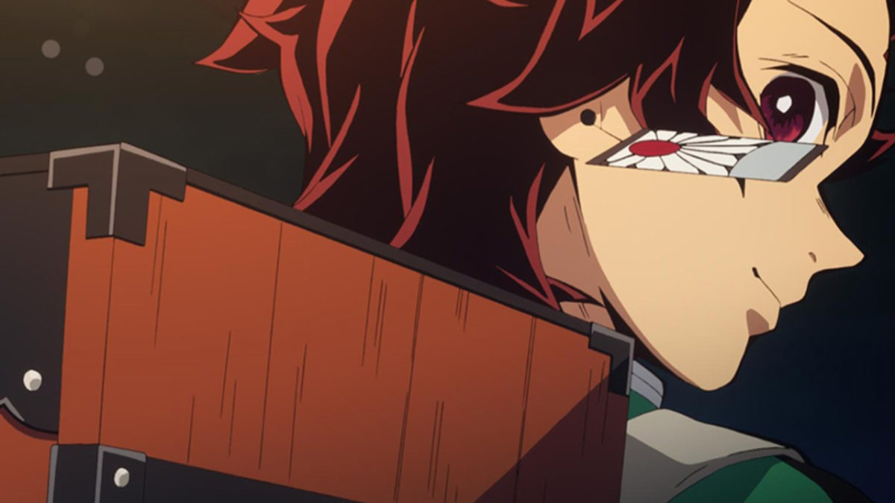
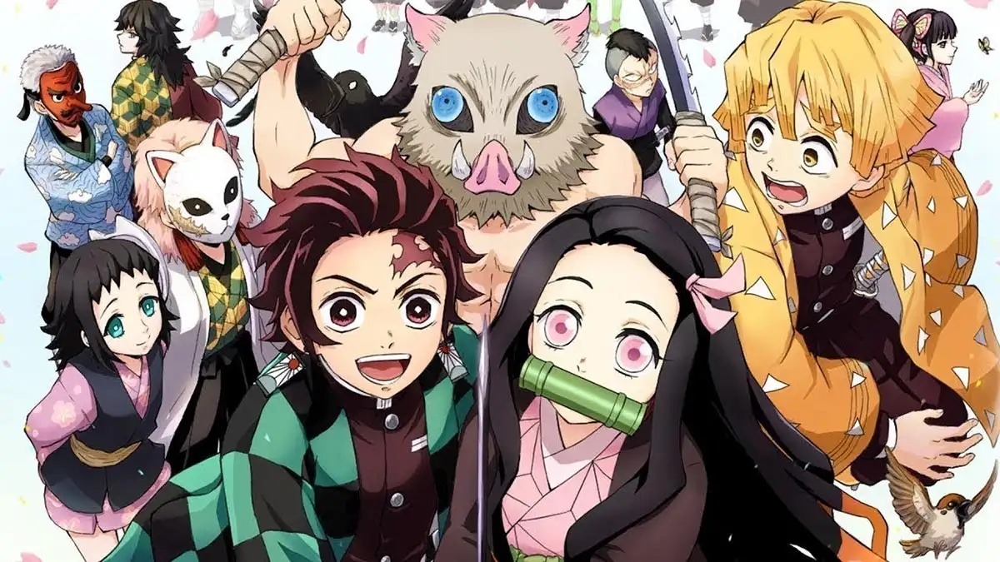
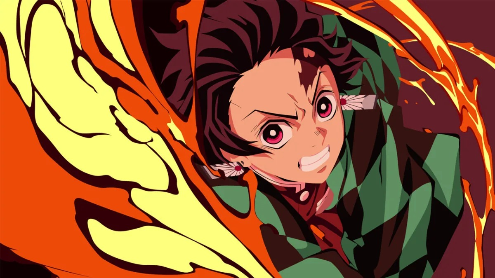
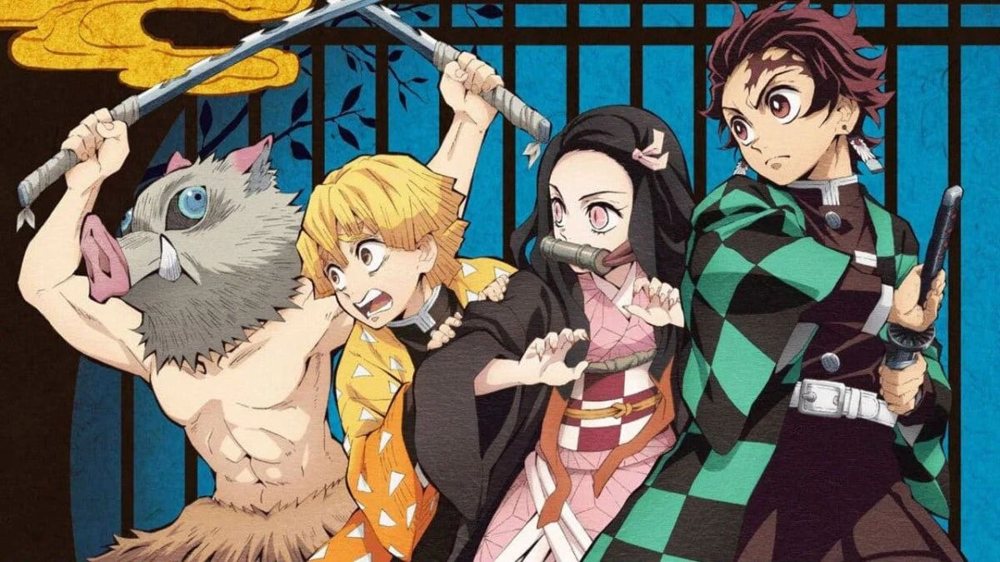
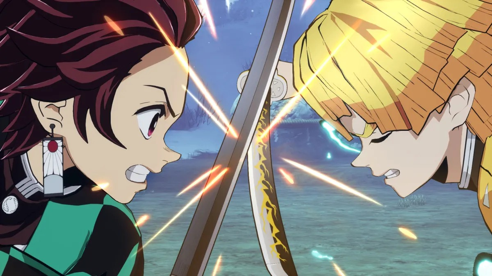
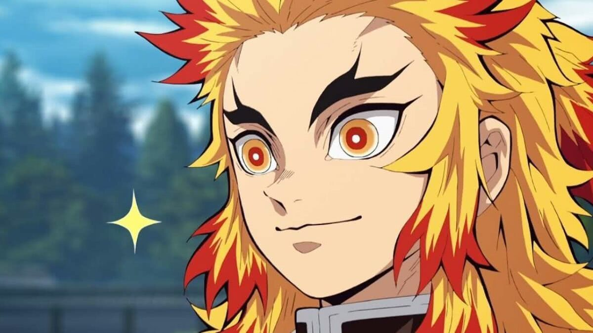

Tanjirō é o filho mais velho de um vendedor de carvão. Sua família inteira foi massacrada por um demônio, com apenas sua irmã Nezuko se transformando em oni. Seu objetivo é encontrar uma cura para ela e transformá-la volta em um humana, e é para esse fim que ele decide se juntar à Ki-satsutai.